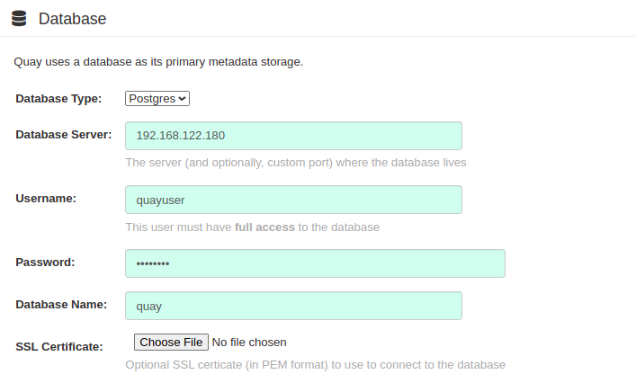
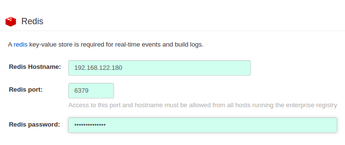
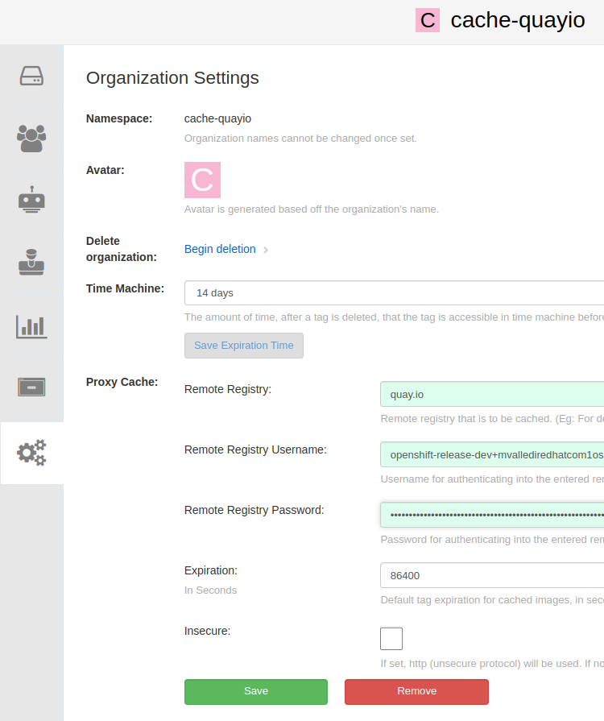

Setup
All our environment would be on a hypervisor. In this machine we will run:
-
A registry VM, where we will run different registry container solutions.
-
A connected Openshift Deployment which later will become disconnected.
-
A disconnected Openshift Deployment.
Additional details:
-
The Openshift clusters will be SNO (Single-Node Openshift) deployments, so they will have only one VM. (master+worker).
-
We will use
kclitool (https://kcli.readthedocs.io/en/latest/) to deploy the registry VM and the Openshift Clusters -
Apart from the deployment of different registry solutions, most of the operations and commands will be executed directly from the hypervisor shell.
-
To simplify we will use always root user.
-
If we need a web browser, we will use
sshuttletool (https://sshuttle.readthedocs.io/en/stable/) to create a kind of "VPN" via SSH between our laptop/PC and the libvirtd network running on our Hypervisor
Prerequisites
kcli and binaries
Connect via ssh to the hypervisor and become root with sudo su. The rest of the workshop we will use root as default user.
-
Install libvirtd and basic binaries
yum -y install libvirt libvirt-daemon-driver-qemu qemu-kvm dnf nano jq vim wget podman skopeo
usermod -aG qemu,libvirt $(id -un)
newgrp libvirt
systemctl enable --now libvirtd-
Install
kcli
curl https://raw.githubusercontent.com/karmab/kcli/main/install.sh | sudo bash-
Create a pool with the additional disk mounted in
/mnt
Probably you may format and mount extra disk to /mnt path. Example:
mkfs.xfs -f /dev/sdb1 && mount /dev/sdb1 /mntkcli create pool -p /mnt default| Since all VMs will be stored in the "pool," adequate space must be allocated for them. Therefore, if the current directory assigned for storage (/mnt) has less than 370GB of space available, it should be changed to a directory with sufficient space. |
-
Install some binaries (oc, kubectl and opm):
wget https://mirror.openshift.com/pub/openshift-v4/x86_64/clients/ocp/4.11.20/openshift-client-linux.tar.gz
tar xvfz openshift-client-linux.tar.gz
mv oc /usr/local/bin/
mv kubectl /usr/local/bin/
rm -f openshift-client-linux.tar.gz
wget https://mirror.openshift.com/pub/openshift-v4/x86_64/clients/ocp/4.11.20/opm-linux-4.11.20.tar.gz
tar xvfz opm-linux-4.11.20.tar.gz
cp opm /usr/local/bin/
chmod +x /usr/local/bin/opmsshuttle
To be able to access to VM network from our laptop/PC we will use sshuttle. This software allow traffic through ssh protocol, similar to a VPN.
If you use Fedora/RHEL/CentOS:
sudo dnf install -y sshuttleTo open a "VPN" execute from your laptop/PC:
sshuttle -r root@<public ip of your hypervisor> 192.168.122.0/24or if you connect using certificates:
sshuttle -r root@<public ip of your hypervisor> 192.168.122.0/24 --ssh-cmd 'ssh -i <your certificate>.pem'This command will route the traffic from YOUR LAPTOP/PC to the network 192.168.122.0/24 (libvirtd network in our hypervisor) via ssh connection.
Registry Virtual Machine
Now we have our machine prepared to create VMs with libvirtd. Connect to your hypervisor and become root.
The first VM will be our registry machine. In this VM we will test 4 different solutions to host or cache Openshift images:
-
Docker Registry v2 with the container image
registry:v2 -
Registry with
mirror-registry: a software provided by Red Hat based on Quay -
Basic installation of Quay: a minimal non-prod installation of Quay, to be able to enable and configure the mirror function in an org.
-
Registry cache. An open source software created by @manuvaldi (https://github.com/manuvaldi/registry-cache) that allows caching of images from different repositories in a simple way.
Follow next steps to create a VM containing all registries servers:
-
Before create any VM we will generate a key pair for ssh
ssh-keygen -t rsa-
Download Fedora image with
kcli
kcli download image fedoralatest-
Create registry vm
kcli create vm -i fedoralatest -P disks=[250] -P memory=8192 -P numcpus=4 registry-
Get IP from registry VM and add the dns to /etc/hosts
$ kcli list vm
---------------------------------------------------------------------------------------------+
| Name | Status | Ip | Source | Plan | Profile |
---------------------------------------------------------------------------------------------+
| registry | up | 192.168.122.X | Fedora-Cloud-Base-37-1.7.x86_64.qcow2 | kvirt | fedoralatest |
---------------------------------------------------------------------------------------------+-
Create
/etc/hostsentry:
echo "192.168.122.X registry.dsal" >> /etc/hostsTo refer to this VM we will use always the DNS
registry.dsal
-
Now reload libvirtd to load dns changes
systemctl reload libvirtdNow we will connect to the registry VM and we will start to install the different containers registry solutions:
Create registry with registry:v2 image (classic)
Connect to registry instance with kcli ssh registry and then (uso sudo su again):
-
connect to VM:
$ kcli ssh registry
[fedora@registry ~]$ sudo su
[root@registry fedora]#and now from the prompt of the registry VM do:
-
set permissive o disable selinux
sed -i s/^SELINUX=.*$/SELINUX=permissive/ /etc/selinux/config
setenforce 0-
We can use the guide in the blog post https://www.redhat.com/en/blog/openshift-private-registry to create a registry. In the following lines the "summary" :)
REGISTRYHOSTNAME=registry.dsal
# dnf update -q -y
mkdir -p /data/registry/{auth,certs,data}
openssl req -newkey rsa:4096 -nodes -sha256 \
-keyout /data/registry/certs/registry.key -x509 -days 3650 \
-out /data/registry/certs/registry.crt \
-subj "/CN=$REGISTRYHOSTNAME" \
-addext "subjectAltName = DNS:$REGISTRYHOSTNAME"
cat /data/registry/certs/registry.crt /data/registry/certs/registry.key > /data/registry/certs/certs.pem
cp /data/registry/certs/registry.crt /etc/pki/ca-trust/source/anchors/
update-ca-trust
dnf -y install httpd-tools
htpasswd -bBc /data/registry/auth/htpasswd registry redhat12345678
dnf -y install podman acl
podman create --name ocp-registry --net host -p 5000:5000 \
-v /data/registry/data:/var/lib/registry:z -v /data/registry/auth:/auth:z \
-e "REGISTRY_AUTH=htpasswd" -e "REGISTRY_AUTH_HTPASSWD_REALM=Registry" \
-e "REGISTRY_HTTP_SECRET=$(date | md5sum)" \
-e REGISTRY_AUTH_HTPASSWD_PATH=/auth/htpasswd -v /data/registry/certs:/certs:z \
-e REGISTRY_HTTP_TLS_CERTIFICATE=/certs/registry.crt \
-e REGISTRY_HTTP_TLS_KEY=/certs/registry.key docker.io/library/registry:2
podman start ocp-registry
cat <<EOF > ~/registry-secret.json
"$REGISTRYHOSTNAME:5000": { "email": "registry@redhat.com", "auth": "$(echo -n 'registry:redhat12345678' | base64 -w0)"}
EOFAfter this step we have:
-
Our Fedora VM updated
-
Certificates for
registry.dsalhost, which we will use for all our registry servers, in the path/data/registry/certs/. -
A
registry:v2container. -
A htpasswd file with the credentials
-
A json file with the credentials to accesss to this registry.
We can see our containter running:
[root@registry fedora]# podman ps
CONTAINER ID IMAGE COMMAND CREATED STATUS PORTS NAMES
60fe656511eb docker.io/library/registry:2 /etc/docker/regis... 15 seconds ago Up 15 seconds ocp-registryCreate registry with mirror-registry
From the registry VM do:
-
Install dependencies and download binary
dnf -y -q install podman acl wget
mkdir -p ~/mirror-registry && cd ~/mirror-registry
wget https://developers.redhat.com/content-gateway/file/pub/openshift-v4/clients/mirror-registry/1.3.2/mirror-registry.tar.gz
tar xvfz mirror-registry.tar.gz-
Create the mirror-registry executing the next command:
./mirror-registry install \
--quayHostname registry.dsal \
--quayRoot /data/mirror-registry \
--initUser registry \
--initPassword redhat12345678 \
--sslCert /data/registry/certs/registry.crt \
--sslKey /data/registry/certs/registry.keyAs you can see we reused the certificates and the same user/password.
After some time, A a mirror-registry registry will be running with the url:
....
INFO[2023-03-14 15:02:25] Quay installed successfully, permanent data is stored in /data/mirror-registry
INFO[2023-03-14 15:02:25] Quay is available at https://registry.dsal:8443 with credentials (registry, redhat12345678)Create Registry Quay standalone with proxy cache/mirror functionality
First of all, open a browser in your laptop and go to https://console.redhat.com/openshift/downloads#tool-pull-secret and copy a Openshift pull secret to ~/pull-secret.json
-
Now, copy it to docker dir:
mkdir -p /root/.docker && cp ~/pull-secret.json ~/.docker/config.json-
Prepare and run postgresql and redis containers. Then, we will run a Quay Config container to be able to create a configuration for our "mini" Quay deployment.
export QUAY=/data/quay
mkdir -p $QUAY/postgres-quay
setfacl -m u:26:-wx $QUAY/postgres-quay
podman run -d --name quay-standalone-postgresql \
-e POSTGRESQL_USER=quayuser \
-e POSTGRESQL_PASSWORD=quaypass \
-e POSTGRESQL_DATABASE=quay \
-e POSTGRESQL_ADMIN_PASSWORD=adminpass \
-p 5432:5432 \
-v $QUAY/postgres-quay:/var/lib/pgsql/data:Z \
registry.redhat.io/rhel8/postgresql-10:1
sleep 10
podman exec -it quay-standalone-postgresql /bin/bash -c 'echo "CREATE EXTENSION IF NOT EXISTS pg_trgm" | psql -d quay -U postgres'
podman run -d --name quay-standalone-redis \
-p 6379:6379 \
-e REDIS_PASSWORD=strongpassword \
registry.redhat.io/rhel8/redis-5:1
podman run --rm -it --name quay_config -p 80:8080 -p 443:8443 registry.redhat.io/quay/quay-rhel8:v3.8.0 config secret
The last command run the quay config container and leave it in foreground. We can access to the web ui from our laptop browser. It is possible because you are running sshuttle VPN.
|
take note of passwords (secret) used for the next step ;)
|
-
Now we are going to create a config file for quay. Open in your browser the config app in http://registry.dsal (you can do it using the registry VM IP address instead)
-
login to UI with credentials:
quayconfig/secret -
In Server Hostname:
registry.dsal -
Use IP of
registrymachine for postgres and redis connection-
PostgreSQL config:
 -
Redis config:

-
-
All passwords and port are in the script. look before asking!!!
-
In super-users section add 'registry' user
Now, validate config pushing the ending button and download de config. After that, you can stop config container with Control+C.
We need to leave the config in the registry VM, so we will copy de config bundle to hypervisor, and from the hypervisor to registry VM:
-
Download quay config and copy it to registry machine. From your laptop/PC run:
scp quay-config.tar.gz root@<fqdn/ip of your hypervisor>:-
and then copy from hypervisor to the registry VM:
kcli scp /root/quay-config.tar.gz registry:/tmp/-
Now, already in the Registry VM, prepare config and storage data dirs
export QUAY=/data/quay
rm -Rf $QUAY/config && mkdir $QUAY/config
cp /tmp/quay-config.tar.gz $QUAY/config
cd $QUAY/config
tar xvf quay-config.tar.gz
echo "FEATURE_PROXY_CACHE: true" >> /data/quay/config/config.yaml
sed 's/PREFERRED_URL_SCHEME:.*/PREFERRED_URL_SCHEME: https/' -i /data/quay/config/config.yaml
cp /data/registry/certs/registry.crt $QUAY/config/ssl.cert
cp /data/registry/certs/registry.key $QUAY/config/ssl.key
chmod 444 $QUAY/config/ssl*
mkdir -p $QUAY/storage
setfacl -m u:1001:-wx $QUAY/storage-
Finally run quay app container:
export QUAY=/data/quay
podman run -d -p 80:8080 -p 443:8443 \
--name=quay-standalone-basic \
-v $QUAY/config:/conf/stack:Z \
-v $QUAY/storage:/datastorage:Z \
registry.redhat.io/quay/quay-rhel8:v3.8.0-
Enter in web UI interface, create user
registry/redhat12345678and create a new organizationcache-quayio, and in the organization settings configure mirror with next values:-
Remote Registry:
quay.io -
Remote Registry Username, extract from pull-secret:
cat ~/pull-secret.json | jq -r '.auths["quay.io"].auth |select (.!=null)' | base64 -d | awk -F':' '{print $1}' -
Remote Registry Password:
cat ~/pull-secret.json | jq -r '.auths["quay.io"].auth |select (.!=null)' | base64 -d | awk -F':' '{print $2}'Like this:
 -
and Save
-
Creating Registry Cache with registry-cache container
From Registry VM do:
-
Install dependencies and create dirs
yum install -y podman httpd-tools
mkdir -p /data/registry-cache/{auth,data}-
create credentials
htpasswd -bBc /data/registry-cache/auth/htpasswd registry redhat12345678-
Create pem file
cat /data/registry/certs/registry.crt /data/registry/certs/registry.key > /data/registry/certs/certs.pem-
locate pull-secret
/root/pull-secret.json -
Run cache container
podman run -d --name registry-cache \
-v /root/pull-secret.json:/pull-secret.json:z \
-v /data/registry-cache/data:/var/lib/registry:z \
-e CLEANER_MAXSIZE=10G \
-e CLEANER_THRESHOLD_PERCENTAGE=20 \
-e CLEANER_RUNEVERY_TIME=30m \
-v /data/registry/certs:/certs:z \
-v /data/registry-cache/auth:/auth:z \
-e "REGISTRY_AUTH=htpasswd" \
-e "REGISTRY_AUTH_HTPASSWD_REALM=Registry Realm" \
-e REGISTRY_AUTH_HTPASSWD_PATH=/auth/htpasswd \
-p 6443:8443 \
quay.io/mvalledi/registry-cache:mainTesting registries
To be able to test, first of all create credentials and copy it to docker dir (in the registry machine):
-
Convert it in human-readable json:
cat ~/pull-secret.json | jq > ~/pull-secret-all.json
vi ~/pull-secret-all.json-
Add credentials in pull-secret-all.json (copy next lines)
....
....
"registry.dsal:5000": {
"email": "registry@redhat.com",
"auth": "cmVnaXN0cnk6cmVkaGF0MTIzNDU2Nzg="
},
"registry.dsal:8443": {
"email": "registry@redhat.com",
"auth": "cmVnaXN0cnk6cmVkaGF0MTIzNDU2Nzg="
},
"registry.dsal": {
"email": "registry@redhat.com",
"auth": "cmVnaXN0cnk6cmVkaGF0MTIzNDU2Nzg="
},
"registry.dsal:6443": {
"email": "registry@redhat.com",
"auth": "cmVnaXN0cnk6cmVkaGF0MTIzNDU2Nzg="
}-
Copy it again to
.dockerdir (and to/tmpdirectory for a later use )
cp ~/pull-secret-all.json ~/.docker/config.json
cp ~/pull-secret-all.json /tmp/Now we will test all registries:
-
Registry v2 (push and pull)
podman pull quay.io/openshift-release-dev/ocp-release@sha256:e86e058f7f66a687e273792f2e4ec70f3cc43ec9d2894bebee5caf5c4d4851a3
podman push quay.io/openshift-release-dev/ocp-release@sha256:e86e058f7f66a687e273792f2e4ec70f3cc43ec9d2894bebee5caf5c4d4851a3 registry.dsal:5000/test
podman rmi registry.dsal:5000/test; podman system prune --all --force; podman rmi --all
podman pull registry.dsal:5000/test-
Registry-mirror (push and pull)
podman pull quay.io/openshift-release-dev/ocp-release@sha256:e86e058f7f66a687e273792f2e4ec70f3cc43ec9d2894bebee5caf5c4d4851a3
podman push quay.io/openshift-release-dev/ocp-release@sha256:e86e058f7f66a687e273792f2e4ec70f3cc43ec9d2894bebee5caf5c4d4851a3 registry.dsal:8443/test
podman rmi registry.dsal:8443/test; podman system prune --all --force; podman rmi --all
podman pull registry.dsal:8443/test-
Registry Quay standalone with proxy cache. (Add registry.dsal entry in /etc/hosts of the registry VM) (only pull)
podman rmi registry.dsal/cache-quayio/openshift-release-dev/ocp-release@sha256:e86e058f7f66a687e273792f2e4ec70f3cc43ec9d2894bebee5caf5c4d4851a3; podman system prune --all --force; podman rmi --all
podman pull registry.dsal/cache-quayio/openshift-release-dev/ocp-release@sha256:e86e058f7f66a687e273792f2e4ec70f3cc43ec9d2894bebee5caf5c4d4851a3-
Registry Cache (only pull)
podman rmi registry.dsal:6443/quay.io/openshift-release-dev/ocp-release@sha256:e86e058f7f66a687e273792f2e4ec70f3cc43ec9d2894bebee5caf5c4d4851a3; podman system prune --all --force; podman rmi --all
podman pull registry.dsal:6443/quay.io/openshift-release-dev/ocp-release@sha256:e86e058f7f66a687e273792f2e4ec70f3cc43ec9d2894bebee5caf5c4d4851a3